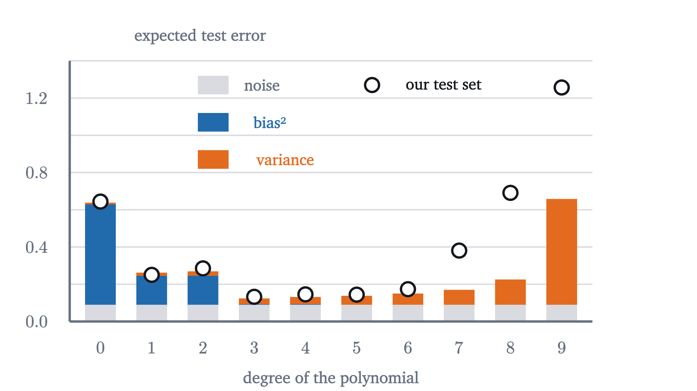
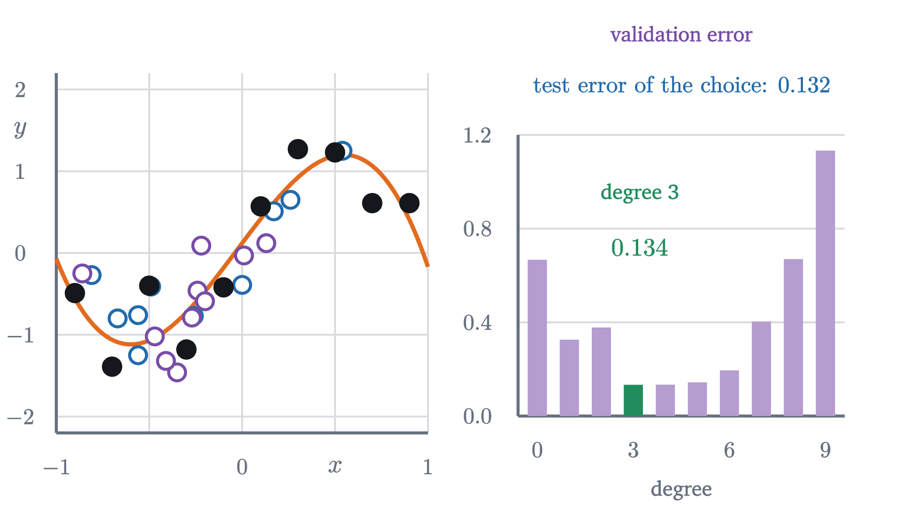

Overfitting: when a model memorizes instead of learning
Fit polynomials of degree 1, 3 and 9 to ten noisy points, watch training and test error part ways, and derive the bias-variance decomposition.
AssumesWhat "learning" means: fitting a line to dataMean, median and standard deviation: what each one says
Here are ten data points and nine curves fitted to them. The last curve, a polynomial of degree 9, passes through all ten points exactly. Its error on the data is zero, and no model could do better than that. It is also the worst of the nine at the one job a model has, which is to predict points it has not been shown.
So a perfect score on the data in hand can go with poor predictions, and we need to understand how. The trouble is that we never see the error we care about while we are fitting. We see the error on the data we have, and the fitting procedure is busy making exactly that number small.
The data, the models and the fit
To study the problem we need a source of data whose truth we know. Ours produces, for an input $x$ between $-1$ and $1$, the output
where $\varepsilon$ is noise: a random number, drawn afresh for each observation from a normal distribution with mean 0 and standard deviation $\sigma = 0.3$. In real problems the function $f(x) = \sin(\pi x)$ is the unknown thing we are after. Here we know it, so we can check our work. The ten training points are
| $x$ | $-0.9$ | $-0.7$ | $-0.5$ | $-0.3$ | $-0.1$ | $0.1$ | $0.3$ | $0.5$ | $0.7$ | $0.9$ |
|---|---|---|---|---|---|---|---|---|---|---|
| $y$ | $-0.49$ | $-1.39$ | $-0.40$ | $-1.18$ | $-0.42$ | $0.57$ | $1.27$ | $1.23$ | $0.61$ | $0.61$ |
The models are polynomials. The model of degree $d$ is
with $d + 1$ adjustable weights. As in the lesson on fitting a line, the training error of a model is its mean squared error on the $n = 10$ training points, $\frac1n\sum_i (\hat y_i - y_i)^2$, and to fit the model is to choose the weights that make the training error as small as possible. This is the method of least squares.
For degree 1 the fit can be done by hand. The inputs are symmetric about 0, so $\sum x_i = 0$, and the least-squares line $\hat y = w_0 + w_1x$ then has $w_0 = \bar y$, the mean of the outputs, and $w_1 = \sum x_iy_i / \sum x_i^2$. From the table, $\bar y = 0.041$, $\sum x_iy_i = 4.039$ and $\sum x_i^2 = 3.3$, so the line is $\hat y = 0.041 + 1.224x$. Its training error is $0.314$.
For a general degree the recipe is the same with more unknowns. Setting the partial derivative of the training error with respect to each weight to zero gives $d + 1$ linear equations in the $d + 1$ weights,
called the normal equations. Every fit in the figures of this lesson is computed in the figure by solving these equations with Gaussian elimination.
Pause and try
The training errors for degrees $0$ to $9$ are $0.808, 0.314, 0.309, 0.122, 0.119, 0.097, 0.056, 0.020, 0.003, 0$. They never go up. Why is that guaranteed, and why is the last one exactly zero?
Show answerHide answer
Every polynomial of degree $d$ is also a polynomial of degree $d + 1$, with $w_{d+1} = 0$. So the degree $d + 1$ fit chooses the best from a larger collection that contains the degree-$d$ fit, and its training error cannot be larger. At degree 9 there are ten weights, and asking the curve to pass through ten points with distinct inputs is ten linear equations in ten unknowns. They have exactly one solution: if two polynomials of degree at most 9 agreed at ten inputs, their difference would have ten roots, and a nonzero polynomial of degree at most 9 has at most 9 roots.
Error on points the model has not seen
By the only score we have, degree 9 wins outright. Before testing it, one number should make us suspicious.
Pause and try
Suppose you were handed the true function $f(x) = \sin(\pi x)$ and used it as your model. Each observation is $y = f(x) + \varepsilon$. What would its mean squared error be, on average? Compare with the degree-9 fit’s training error.
Show answerHide answer
The miss at each point would be exactly the noise $\varepsilon$, so the mean squared error would average $\sigma^2 = 0.09$, the variance of the noise. (On our ten points it comes to $0.134$.) No model can be expected to beat $0.09$ on fresh data, because the noise in a new observation is unpredictable. A training error of 0 is below this floor, which means the degree-9 curve has matched the noise in these ten outputs along with the signal.
To find out what that costs, draw twenty new points from the same source and compare.
A test error is an estimate of the expected test error, in the same way that a sample mean estimates a population mean.
The two curves start together and part ways. At degree 1 the training error is $0.314$ and the test error $0.250$: both are high, because no straight line can follow a sine wave. That failure is called underfitting. At degree 3 they are $0.122$ and $0.133$, close to each other and not far above the floor of $0.09$. From there the training error keeps falling while the test error turns around and climbs: $0.381$ at degree 7 and $1.257$ at degree 9, against a training error of exactly 0. A model whose training error is low and whose test error is much higher is overfitting. At $x = -0.8$, where the truth is $\sin(-0.8\pi) = -0.59$, the degree-9 curve predicts $-3.54$.
Why flexible models fit the noise
To see why passing closer to the data can make a curve worse, remember that our ten outputs are one draw of the noise. Suppose the same ten inputs were measured again. The values of $f$ would be the same, the noise would be new, and each fit would come out differently. The next figure does this twenty times.
There are two different ways to be wrong in this picture. The lines are all nearly the same line, and all of them cut across the sine wave: the average of the fits is itself far from the truth. The degree-9 curves have the opposite character. Their average is almost exactly the truth, yet each individual curve swings far from it, because each one chases the noise of its own training set. We have only one training set, so we get one curve from the bundle, and how good it is depends on both things: where the bundle is centered and how widely it spreads.
To make this exact, fix an input $x_0$ and write $E[\,\cdot\,]$ for the mean over repeated draws of everything random.
The proof used two facts about means: the mean of a sum is the sum of the means, and the mean of a product of independent quantities is the product of their means. Each clause of the statement was needed. Independence of the new observation killed the term $E[AC]$, and it fails if the test point was used in training. The mean-zero noise is what lets us call $f$ the target.
In our experiment the ten inputs stay fixed and only the noise is redrawn, so $E$ averages over the noise in the ten training outputs and in the new observation. For least squares the three terms can then be computed exactly, because the fitted weights are a linear function of the outputs. At $x_0 = -0.8$ the line has bias$^2 = 0.039$ and variance $0.026$. The cubic has $0.004$ and $0.037$. The degree-9 fit has bias$^2 = 0$ to four decimals and variance $3.39$: a typical prediction there is off by $\sqrt{3.39} \approx 1.8$. Averaging over inputs between $-0.9$ and $0.9$ gives the next figure.

As the degree rises, the squared bias collapses, from $0.156$ at degree 1 to $0.003$ at degree 3 and essentially nothing after that, while the variance creeps up from $0.017$ to $0.031$ and then explodes to $0.568$ at degree 9. Their sum is smallest at degree 3. Our twenty test points are one sample, and they follow the same shape.
Choosing the degree without cheating
We picked out degree 3 by looking at the test error. That was legitimate for studying the phenomenon and would be cheating in practice, for the same reason that the training error misleads. If the twenty points are used to choose among ten models, the winner’s error on those points is partly luck: the minimum of ten noisy estimates tends to lie below the true value of the one that wins. Data used to make a choice has been used for training.
The remedy is to hold out data twice. Split the twenty new points into two sets of ten. The first ten are the validation set: the degree is chosen by the error on them. The last ten are the test set, looked at once, after every choice has been made.

The validation errors for degrees 0 to 9 are $0.667, 0.326, 0.378, 0.134, 0.134, 0.144, 0.195, 0.403, 0.670, 1.133$. Degree 3 is the smallest, ahead of degree 4 only in the fourth decimal place, and when two models tie the simpler one is the safer choice. Its error on the ten test points is $0.132$. That is the number to report, and the validation error $0.134$ is not, even though here they happen to agree.
Ridge regression: penalizing large weights
Lowering the degree is a blunt way to control variance: it removes weights one at a time. There is a finer one, and a look at the fitted weights suggests it. The cubic fit is $0.12 + 3.03x - 0.24x^2 - 3.08x^3$. The degree-9 fit has weights as large as $292$ and $-211$, which nearly cancel one another to pass through the points and fail to cancel in between. Wild curves need large weights. So keep all ten weights, and charge the model for making them large.
Setting $\lambda = 0$ gives least squares back. To see what a positive $\lambda$ does, take degree 1 on our data. With $\sum x_i = 0$ the constant is still $\bar y$, and setting the derivative with respect to $w_1$ to zero gives $\frac2n\sum_i (\bar y + w_1x_i - y_i)x_i + 2\lambda w_1 = 0$, that is,
Pause and try
Compute the ridge slope for $\lambda = 0$, $0.1$ and $1$. What happens as $\lambda$ grows without bound?
Show answerHide answer
$4.039/3.3 = 1.224$, $4.039/4.3 = 0.939$ and $4.039/13.3 = 0.304$. The penalty adds $n\lambda$ to the denominator, so the slope shrinks toward 0 as $\lambda$ grows, and the fit flattens toward the constant $\bar y$.
In general the penalty adds $n\lambda$ to the diagonal coefficient of each normal equation with $j \ge 1$, and the equations are solved as before. Ridge trades variance for bias: shrinking the weights makes the fit less sensitive to the noise in the outputs and pulls it away from the least-squares answer. The right amount is a choice like the degree, and it is made the same way, on the validation set.
On a grid of strengths $10^{-7}, 10^{-6.5}, \dots, 1$ the validation error is smallest at $\lambda = 10^{-3}$, where it is $0.145$. The training error there is $0.103$, no longer zero, and the largest weight is $3.2$ in size where it was $292$. On the test set this model scores $0.151$, against $1.380$ for the unpenalized degree-9 fit and $0.132$ for the cubic. With the penalty, ten weights predict about as well as the cubic’s four.
Ridge and a lower degree both reduce variance by restricting the model. A third cure restricts nothing: more data. The noise in many observations averages out, and the variance of a fit shrinks roughly in proportion to $1/n$, as the last problem makes precise. With enough points, degree 9 stops being too flexible.
Worked examples
Stepping back
The difficulty here was that the quantity we can compute and the quantity we care about come apart, and the fitting procedure pushes on the first. The decomposition says exactly how they come apart: flexibility buys low bias and pays for it in variance, and the variance is invisible from inside the training set. Held-out data makes it visible, and a penalty or a smaller model or more data brings it down.
None of this was special to polynomials. A neural network with millions of weights is far more flexible than a degree-9 polynomial, and training and validation error are tracked for it in the same way.
Check yourself
A team fits models of increasing size. For the largest, the training error is $0.01$ and the validation error is $0.90$; for a mid-sized one both are about $0.15$. What describes the largest model?
Problems
The first three are computations, the next two ask for explanations, and the last two go beyond the lesson.
Problem 1
For the three training points $(-1, 1)$, $(0, 0)$, $(1, 2)$ of the first worked example, fit the degree-0 model $\hat y = w_0$. Give its training error and its squared error on the test point $(2, 2.5)$, and rank the models of degree 0, 1 and 2 by each kind of error.
Show solutionHide solution
The constant that minimizes the mean squared error is the mean, $w_0 = \bar y = 1$. The misses are $0, 1, -1$, so the training error is $\frac{0 + 1 + 1}{3} = 0.667$. On the test point the squared error is $(1 - 2.5)^2 = 2.25$. Training errors: degree 0 has $0.667$, degree 1 has $0.5$, degree 2 has $0$, so the ranking from best to worst is $2, 1, 0$. Test errors: $2.25$, $0.25$ and $20.25$, so the ranking is $1, 0, 2$. The model that is best on the training set is worst on the test point.
Problem 2
For the lesson’s ten training points, the ridge fit of degree 1 has slope $w_1 = 4.039/(3.3 + 10\lambda)$. (a) Find the slope for $\lambda = 0.5$. (b) Which $\lambda$ makes the slope exactly half of the least-squares slope?
Show solutionHide solution
(a) $4.039/(3.3 + 5) = 4.039/8.3 = 0.487$. (b) The slope is halved when the denominator doubles: $3.3 + 10\lambda = 6.6$, so $\lambda = 0.33$. In general the slope is halved at $n\lambda = \sum x_i^2$.
Problem 3
Estimating a constant as in the second worked example, take $\mu = 2$, $\sigma^2 = 9$ and $n = 9$. (a) Find the expected squared error of the prediction $c\,\bar y$ for $c = 1$. (b) Find the $c$ that minimizes it, and the minimum.
Show solutionHide solution
The expected squared error is $\sigma^2 + (1 - c)^2\mu^2 + c^2\sigma^2/n = 9 + 4(1 - c)^2 + c^2$. (a) At $c = 1$ it is $9 + 0 + 1 = 10$. (b) The derivative with respect to $c$ is $-8(1 - c) + 2c$, which is zero at $c = 0.8$; the second derivative, 10, is positive, so this is the minimum. The value is $9 + 4(0.04) + 0.64 = 9.8$. Most of the error, 9 out of 9.8, is noise that no estimate can remove.
Problem 4
A classmate argues: “The degree-9 polynomial contains the degree-3 polynomial as a special case, so it can do everything the cubic can. It cannot be the worse model.” Which part of this is true, and where does the argument fail?
Show solutionHide solution
The first part is true: every cubic is a degree-9 polynomial with $w_4 = \dots = w_9 = 0$, and this is exactly why the degree-9 fit has the lower training error. The argument fails in assuming that the fitting procedure will pick the good cubic from the larger collection. Least squares picks whichever member has the lowest training error, and in the larger collection that member is one that also matches the noise. Having good models available is different from choosing them. In the language of the theorem, the larger collection has lower bias, but the choice made from it has higher variance.
Problem 5
A model is tuned by trying 50 values of a setting and keeping the one with the lowest validation error, $0.20$. On the test set the chosen model scores $0.26$. (a) Which number estimates its error on new data? (b) Why is the validation number likely to be the lower of the two? (c) The team now tries 50 more settings and picks the one with the best test error. What have they lost?
Show solutionHide solution
(a) The test error, $0.26$. (b) Each validation error is the true expected error of its model plus a random deviation due to the particular validation points. Selecting the minimum of 50 favors models whose deviation happened to be negative, so the winner’s validation error tends to understate its expected error. The test set took no part in the selection, so its deviation is equally likely to have either sign. (c) They have turned the test set into a second validation set. Its error for the new winner is biased downward for the same reason, and no untouched data remains to give an honest estimate.
Problem 6
(Variance of a fitted line.) Let the training inputs $x_1, \dots, x_n$ be fixed with $\sum x_i = 0$, and let $y_i = f(x_i) + \varepsilon_i$ with independent noise of variance $\sigma^2$. The least-squares line predicts $\hat g(x_0) = \bar y + w_1x_0$ with $w_1 = \sum x_iy_i/\sum x_i^2$. (a) Write $\hat g(x_0)$ as $\sum_i a_iy_i$ and find the $a_i$. (b) Using the fact that the variance of a sum of independent quantities is the sum of their variances, show that the variance of $\hat g(x_0)$ is $\sigma^2\bigl(\frac1n + \frac{x_0^2}{\sum x_i^2}\bigr)$. (c) Evaluate it for the lesson’s design at $x_0 = -0.8$.
Show solutionHide solution
(a) $\bar y = \sum_i \frac1n y_i$ and $w_1x_0 = \sum_i \frac{x_0x_i}{S}y_i$ with $S = \sum x_i^2$, so $a_i = \frac1n + \frac{x_0x_i}{S}$. (b) The $f(x_i)$ are constants, so the variance of $a_iy_i$ is $a_i^2\sigma^2$, and by independence the variance of the sum is $\sigma^2\sum a_i^2$. Expanding, $\sum_i a_i^2 = \sum_i \frac{1}{n^2} + \frac{2x_0}{nS}\sum_i x_i + \frac{x_0^2}{S^2}\sum_i x_i^2 = \frac1n + 0 + \frac{x_0^2}{S}$, where the middle term vanishes because $\sum x_i = 0$. (c) With $\sigma^2 = 0.09$, $n = 10$ and $S = 3.3$: $0.09\,(0.1 + 0.64/3.3) = 0.09 \times 0.2939 = 0.026$, the value quoted in the lesson. The variance is smallest at the center of the data and grows toward the edges.
Problem 7
(More data.) It is a theorem of linear regression that for a least-squares polynomial of degree $d$ fitted to $n > d$ points with distinct inputs and independent noise of variance $\sigma^2$, the variance of the prediction, averaged over the $n$ training inputs, is exactly $\sigma^2(d + 1)/n$. (a) Verify this directly for $d = 0$. (b) Verify it for $d = 9$, $n = 10$. (c) With $\sigma^2 = 0.09$, how many training points does a degree-9 fit need for this average variance to match that of a cubic fitted to 10 points?
Show solutionHide solution
(a) The degree-0 fit predicts $\bar y$ everywhere, and the variance of a mean of $n$ independent observations is $\sigma^2/n = \sigma^2(0 + 1)/n$. (b) With ten points the degree-9 fit passes through every training point, so its prediction at $x_i$ is $y_i = f(x_i) + \varepsilon_i$, whose variance is $\sigma^2 = \sigma^2 \cdot 10/10$. (c) The cubic on 10 points has average variance $0.09 \times 4/10 = 0.036$. Degree 9 on $n$ points has $0.09 \times 10/n$, which equals $0.036$ when $n = 25$. Flexibility is relative to the amount of data: each weight needs its share of observations to pin it down.